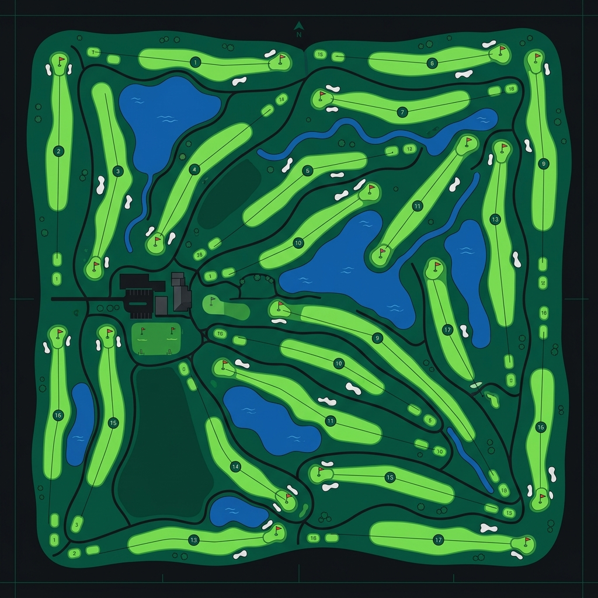
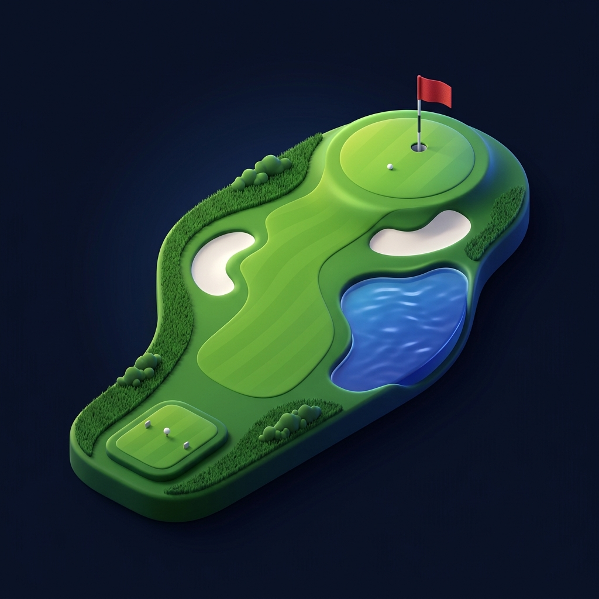
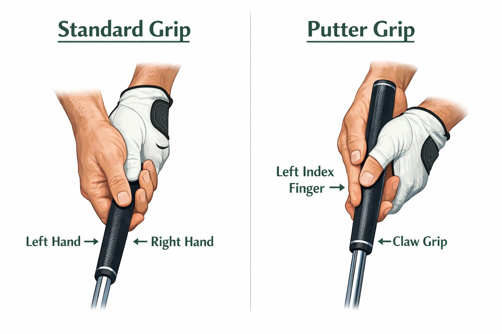
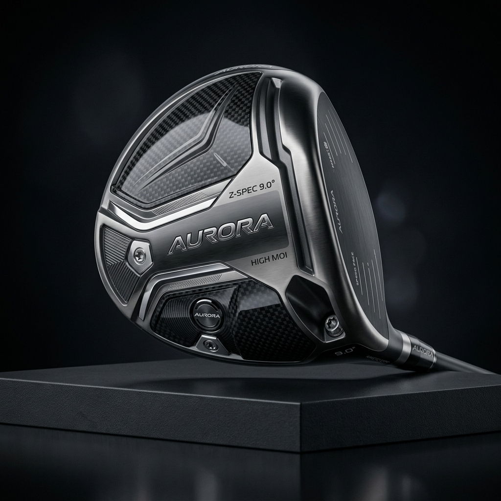
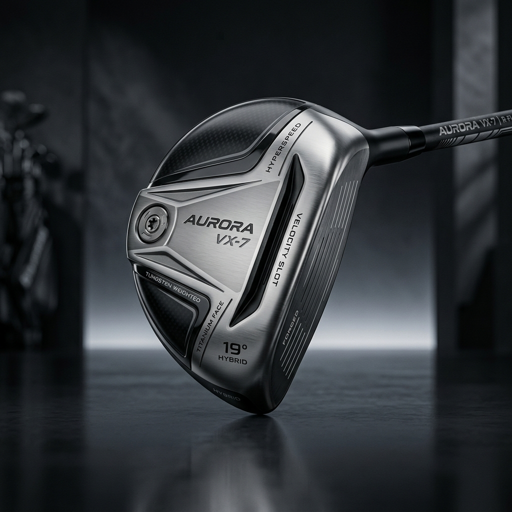
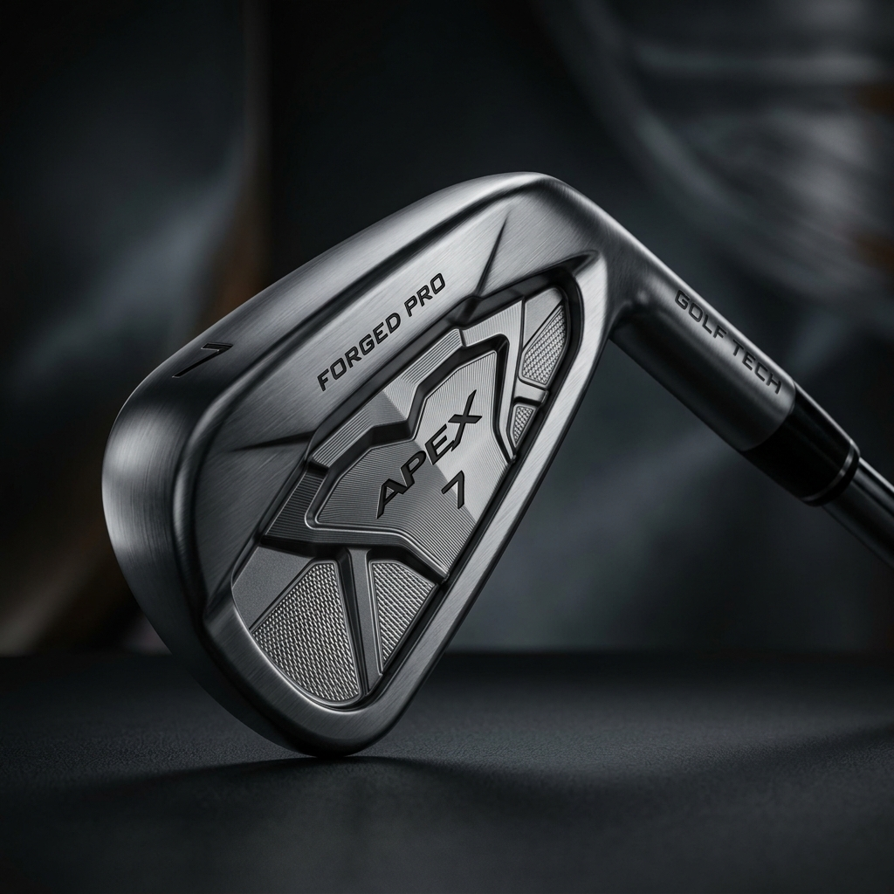
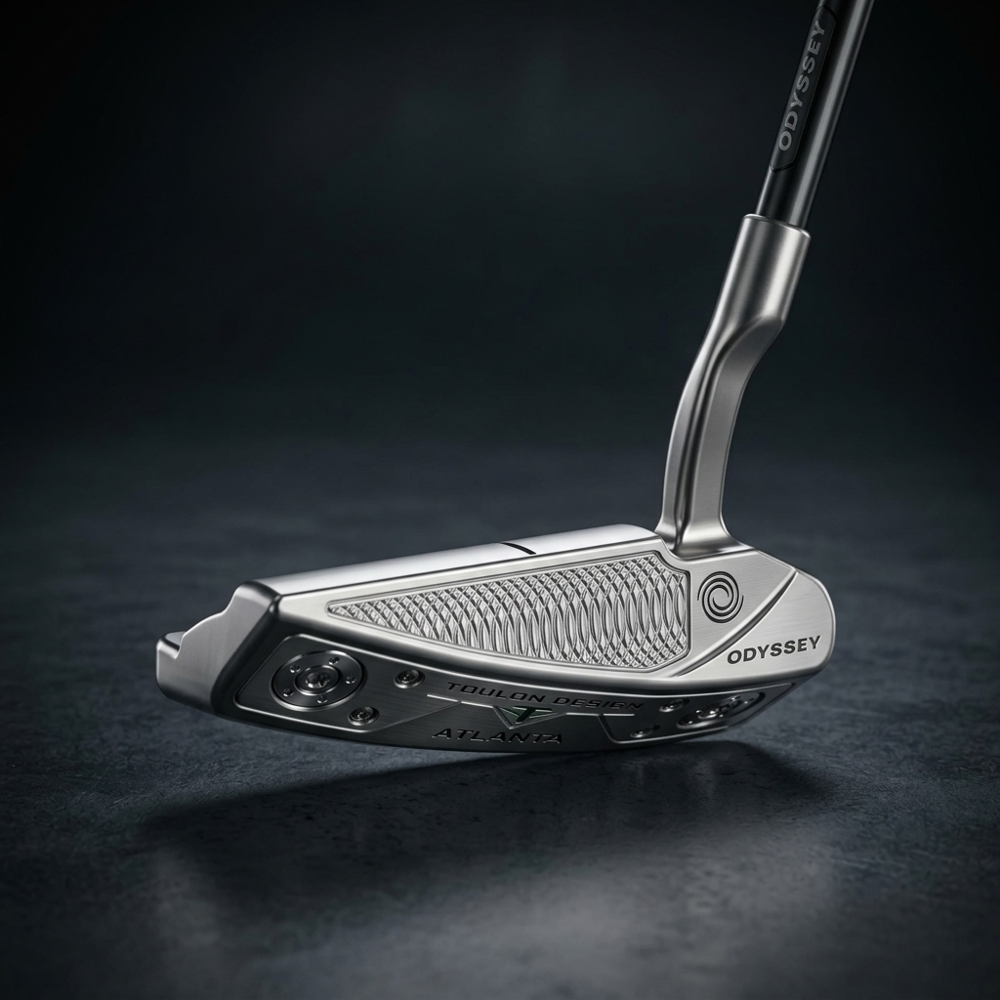

The Golf Facility Overview
Beyond the 18 holes, a standard golf course features several key areas where golfers prepare and relax.

Clubhouse
The main building serving as the hub for golfers. It usually contains the pro shop, locker rooms, a restaurant or bar, and administrative offices.
Driving Range
A practice area where golfers can repeatedly hit balls to warm up before a round or dial in their full swings without retrieving the balls.
Practice Green
A dedicated, undulating putting green located near the clubhouse for golfers to practice chipping and putting to get a feel for the grass speed.
The 18 Holes
The main course itself, consisting of an organized sequence of 18 holes. It is split into the "Front Nine" (holes 1-9) and the "Back Nine" (holes 10-18).
Cart Path / Staging
Designated pathways connecting holes so golf carts don't damage the turf, and a staging area near the clubhouse where carts line up before tee-times.
Anatomy of a Golf Course
Understand the different terrains and areas you will encounter on a standard golf hole.

Tee Box
The starting point of the hole. This is the only place where you are allowed to place your ball on a small peg (a tee) for your first shot.
Fairway
The closely mown area between the tee box and the green. Hitting your ball here provides the best lie and easiest subsequent shots.
Rough
Areas of longer, thicker grass lining the fairway. It's designed to penalize inaccurate shots, making it harder to strike the ball cleanly.
Hazards
Strategic traps like sand pits (bunkers) or ponds/creeks (water hazards) designed to severely test a player's accuracy and decision-making.
Putting Green
The ultimate destination. The grass here is cut extremely short so the ball can roll smoothly towards the cup marked by a flagstick.
How the Game is Played
A quick overview of the rules, scoring, and flow of a standard round of golf.
1. The Primary Objective
Golf is a game of precision where the ultimate goal is to navigate 18 distinct holes in the fewest total strokes possible. Your final score is the sum of every swing made from the first tee box to the final cup. Accuracy and strategy often outweigh raw power.
2. The Teeing Area
Each hole begins at the Tee Box. This is the only place where you are allowed to "tee up" your ball on a small peg to make the initial shot easier. Typically, the Driver or a long wood is used here to maximize distance toward the fairway.
3. Fairway & Approach
Once off the tee, the goal is to land on the Fairway—the closely mown grass that provides the best "lie" for your next shot. If you miss, you'll land in the Rough, where longer grass makes it significantly harder to control the ball's flight and spin.
4. Hazards & Obstacles
Courses are designed with Bunkers (sand traps) and Water Hazards to test your nerves. Landing in sand requires a specialized splash shot, while water usually results in a penalty stroke, forcing you to drop a new ball and adding to your score.
5. The Putting Green
The hole ends on the Green, a surface of extremely short, smooth grass. Here, you use a Putter to roll the ball into the cup. "Reading the green"—understanding the subtle slopes and grain—is a vital skill to master for a low score.
6. Etiquette & Pace
Golf is built on integrity and respect. Players must remain silent during others' swings, repair their ball marks on the green, and keep up with the Pace of Play to ensure everyone on the course enjoys their round without long delays.
Detailed Scoring Terms
Unlike most sports, the lowest score in golf wins. Every hole has a "Par" stroke count. Your score is based on how many strokes it takes compared to that Par.
The Perfect Grip
Your only connection to the golf club is through your hands. A proper grip ensures control, stability, and consistent power delivery throughout your swing.

Overlapping / Interlocking
- Hand Unity — The hands must work as a single unit without sliding.
- The "V" Shape — Thumbs and index fingers form Vs pointing to your right shoulder.
- Pressure — Hold it like a tube of toothpaste; firm but not squeezing.
Reverse Overlap
- Palm Alignment — Palms face each other for a pure pendulum motion.
- Index Overlap — Lead index finger rests across the trail fingers.
- Quiet Wrists — The grip is designed to eliminate wrist rotation.
Club Stance Guide (Top-Down)
Proper ball positioning and foot alignment are the foundations of a great swing. Here is how your setup should look from directly above.
- Wide Stance — Feet outside shoulder-width for power/stability
- Forward Ball — Lined up with the inside of your lead (left) heel
- Impact — Attacking the ball on the upswing for low spin
- Neutral Stance — Feet shoulder-width apart for balance
- Center Ball — Centered in the middle of your feet
- Impact — Hitting down on the ball to create backspin
- Open Stance — Feet and body aimed slightly left of target
- Back Ball — Positioned to the right of center for clean contact
- Bunker Impact — Strike the sand 2 inches behind the ball
- Narrow Stance — Feet hip-width apart for consistency
- Under Eye — Lined up directly under your left eye
- Impact — Smooth roll without skidding or lofting
Swing & Ball Flight
Two factors determine where your ball goes: the swing path (direction of the clubhead) and the clubface angle at impact. Understanding these is the key to diagnosing and fixing any miss.
Straight Shot
- Square Face — Clubface points directly at the target at impact.
- Square Path — Clubhead travels directly along the target line.
- Result — Ball flies straight with minimal sidespin.
The Slice (Curves Right)
- Open Face — Clubface is open (pointing right) relative to swing path at impact, creating clockwise sidespin.
- Outside-to-In Path — Clubhead swings across the ball from outside the target line, often caused by an "over-the-top" move.
- Fix It — Strengthen your grip slightly and focus on swinging from the inside, as if hitting to right field.
The Hook (Curves Left)
- Closed Face — Clubface is closed (pointing left) relative to swing path, creating counter-clockwise sidespin.
- Inside-to-Out Path — Clubhead swings from inside the target line to the outside, often caused by too much hand rotation.
- Fix It — Weaken your grip slightly and focus on keeping the clubface from closing too early through impact.
Standard Ball Distance Yards
Approximate carry distances for an average amateur player. Varies by skill and club loft.

The Driver
✨ Key Features
Features the largest head (up to 460cc), the longest shaft, and the lowest loft in the bag. Modern drivers are engineered with aerospace-grade titanium and carbon fiber crowns to maximize forgiveness, reduce weight, and lower the center of gravity. Large sweet spots ensure fast ball speeds even on off-center strikes.
🎯 Primary Usage
Exclusively used off the tee box on par-4s and par-5s. Its ultimate purpose is launching the ball as far down the fairway as possible. The driver sets the tone for the hole, demanding an upward strike to optimize launch angle and minimize spin for maximum carry distance.

The Hybrid
✨ Key Features
A brilliant marriage of wood and iron technologies. It features a smaller, more compact head than a fairway wood but retains a convex sole designed to glide smoothly through difficult turf. The shaft length mimics an iron for control, while the hollow body geometry shifts the weight deep and low, making it inherently forgiving.
🎯 Primary Usage
Often replacing harder-to-hit long irons (like a 3 or 4-iron), the hybrid is exceptionally versatile. It excels at long, high-launching approaches from the fairway, and is heavily relied upon to easily extract the ball from thick rough or unfavorable lies where an iron head might get tangled.

The Iron
✨ Key Features
Characterized by a thin profile, typically cast or forged from high-quality steel. The clubface is meticulously milled with horizontal grooves designed to impart backspin on the golf ball. They come in varying numbered sets; lower numbers indicate lower loft, while higher numbers indicate higher loft and a shorter shaft, scaling precisely for repeatable distance gapping.
🎯 Primary Usage
The workhorses of the golf bag. Irons are primarily used for precision approach shots into the green from the fairway, rough, or tee boxes on par-3s. A descending strike is required, compressing the ball against the turf to generate spin, ensuring the ball stops quickly upon landing on the green.
The Wedge
✨ Key Features
Wedges are high-lofted irons designed for specialized shots. They feature "bounce" on the sole to prevent the club from digging too deeply into sand or soft turf. Variations include the Pitching Wedge (PW), Gap Wedge (GW), Sand Wedge (SW), and Lob Wedge (LW), each with increasing loft for higher, shorter trajectories.
🎯 Primary Usage
Used for the most delicate shots within 100 yards of the green. They are essential for "scrambling"—extricating the ball from bunkers, thick rough, or chipping from just off the putting surface. The ultimate goal with a wedge is to "stick it close" to the pin for a single putt.

The Putter
✨ Key Features
Distinctive for its flat or incredibly low-lofted face (usually 2 to 4 degrees). Putters are available in a massive array of styles, predominantly "blades" or "mallets". They incorporate specialized alignment lines, precise face grooving or inserts for softer feel, and thicker proprietary grips to minimize wrist action during the stroke.
🎯 Primary Usage
The most crucial and regularly used club in any golfer's bag, accounting for nearly 50% of the strokes in a round. Exclusively utilized on or just off the putting green, its sole purpose is rolling the ball smoothly and accurately along the grass directly into the hole.
The Essential Gear
Beyond the clubs, these are the must-have accessories that every golfer needs to enjoy a comfortable and respectful round on the course.
Golf Glove
Worn on your lead hand (left hand for right-handed players), the golf glove provides a secure, non-slip grip on the club. Made from thin leather or synthetic materials, it prevents blisters from friction and allows you to hold the club with less tension—crucial for a smooth, repeatable swing.
Golf Shoes
Unlike regular sneakers, golf shoes feature specialized soles with soft spikes or aggressive tread patterns engineered for maximum traction on grass, sand, and uneven slopes. They anchor your feet during the swing, preventing slipping and providing the stable base needed to generate power and maintain balance throughout your motion.
Hat / Visor
A round of golf can last 4–5 hours under direct sunlight. A quality golf cap or wide-brimmed hat provides essential UV protection for your face, neck, and eyes. It also reduces sun glare, helping you maintain focus on the ball and read the greens more effectively throughout the day.
Golf Tees
These small pegs (made of wood, plastic, or bamboo) elevate the ball off the ground for your first shot on each hole. Teeing the ball up makes it dramatically easier to launch it into the air, especially with a driver. Different heights are available to suit different clubs and personal preferences.
Ball Marker
When your ball lands on the putting green, you must mark its position before picking it up to clean it or to clear the line for another player. A ball marker is a small, flat object (often a coin or a magnetic token) placed directly behind the ball. It's a fundamental piece of golf etiquette and an official rule of the game.
Divot Repair Tool
A two-pronged metal or plastic tool used to repair "ball marks"—the small craters left on the green when a ball lands from a high approach shot. Repairing these marks is a cornerstone of golf etiquette: it keeps the putting surface smooth and playable for everyone, and an unrepaired mark can take weeks to heal naturally.